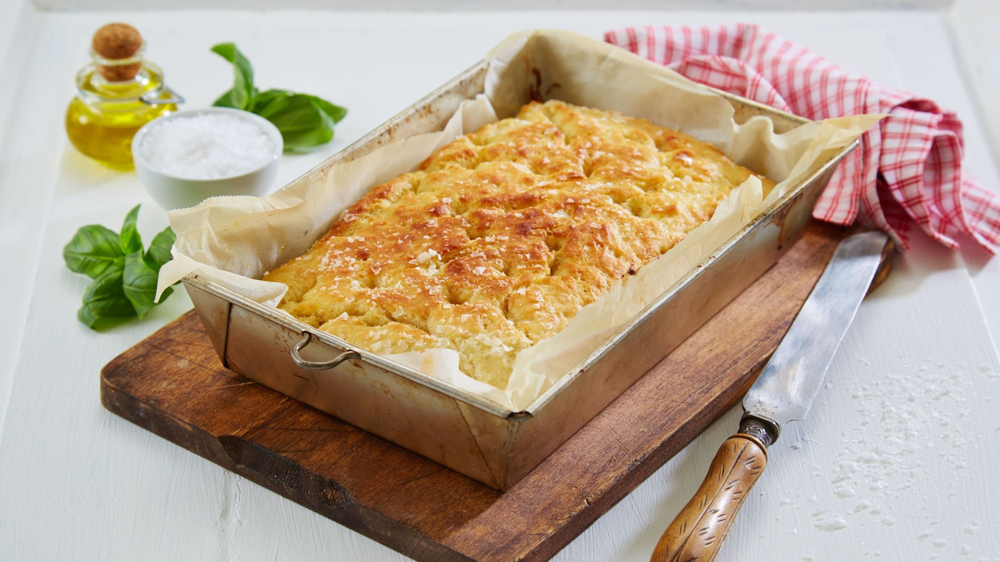

Tapas
INGREDIENTS
portions
3
crushed cloves of garlic
Foccacia
-
Mix flour, yeast, salt and water. Kned the dough.
-
Let the dough rise for 30 minutes.
-
Pour into a pan, with paper in the bottom. Pour oil over the dough,
and the garlic colves.
-
Add salt, and spices.
-
Cover the dough, and let it rise for an hour
-
Let it bake in the oven at 250 degrees for 25 minutes.
